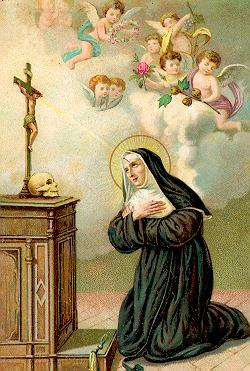
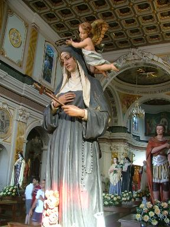
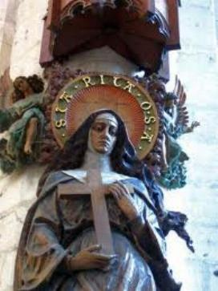
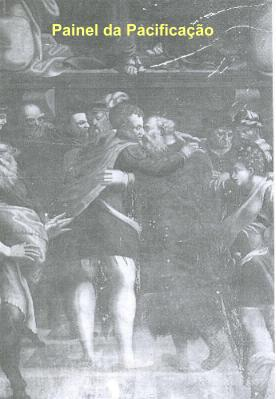
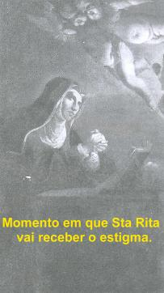

EXISTÊNCIA DRAMÁTICA
OS HERDEIROS ERAM GÊMEOS
É dever de todo
o casal que busca a felicidade, procurar superar as inevitáveis dificuldades e
falta de 
Após cinco anos de casamento, ou seja, no ano 1400 ela com 19 anos de idade e o esposo com aproximadamente 30 anos, tiveram dois filhos, gêmeos: João Tiago e Paulo Maria, que foram batizados na Paróquia de Santa Maria do Povo, em Cássia.
Rita vivia feliz e alegremente realizava a experiência da maternidade desejada e esperada, sentindo-se agradecida a DEUS pela chegada dos filhos. Assumia com competência os deveres e as ocupações cotidianas que toda esposa e mãe responsável exercem, em todos os tempos, realizando com diligência e generosidade todos os serviços, em benefício da família. Estava “cheia de afazeres”: educar os filhos, cuidando da sua saúde física e espiritual, e à medida que cresciam, providenciava a sua formação cultural, segundo os usos da época. Cuidava da refeição de todos, da limpeza do lar e do necessário reabastecimento.
Esta movimentação lhe dava pouco tempo para a oração e por isso mesmo, com inteligência e sabedoria ela transformava em oração todas as suas ações, oferecendo-as a DEUS com disponibilidade e amor.
Com o transcorrer dos anos, João Tiago e Paulo Maria tornaram-se dois brilhantes adolescentes, muito semelhantes ao pai, tanto no físico como no caráter. O pai, entretanto, havia se “amansado” na “escola de Rita”. Tinha sido conquistado pela inteligência, virtudes e dotes humanos de sua jovem e bela esposa.
ASSASSINATO DE SEU ESPOSO

ELA FOI DESPERTADA PARA A TRAGÉDIA
Durante aquela trágica
noite, Rita estava em casa, nervosa e aflita, porque a tempestade era muito intensa
e a 
Seguindo o exemplo de seus pais, que tinham a profissão de “pacificadores de JESUS CRISTO”, que ela ainda jovem os ajudou nas missões, agora, em face do trágico acontecimento, ela se empenhou para acabar com o ódio e a vingança, esforçando-se para conseguir trocar com os assassinos de seu marido, o abraço fraterno da paz. Ela precisava urgentemente providenciar o estabelecimento da paz entre as famílias, por causa de seus dois filhos, que já pensavam em vingança e de certa forma eram estimulados pelos parentes, irmãos de seu pai, que os aconselhavam a reagir. Mas Rita não concordava com aquela intenção e procurou proteger os filhos buscando a paz com os assassinos de Paulo. Ela perdoou e rezou sempre por aqueles que assassinaram o seu marido, como testemunhou o senhor A. Cittadoni, durante o processo de sua Beatificação.
PROPÓSITO DE VINGANÇA

Em 1413, os filhos João Tiago e Paulo Maria, eram dois adolescentes de 14 anos cheios de vigor, que herdaram do pai “a altivez, a excelência física e a força”, no dizer dos historiadores, e também, o orgulho da casa Mancini. Embora educados desde criança pela mãe no amor e na paz, nutriam a vingança no coração e esperavam com impaciência a ocasião propícia para consumá-la.
Além disso, os familiares Mancini, parentes do pai assassinado, solicitavam aos dois jovens que vingassem a morte de Paulo, segundo o costume sanguinário da época, prometendo ajuda e colaboração.
Mas Rita não aceitava esta situação e rezava pelos filhos e rezava pelos assassinos. Seu coração estava amargurado vendo a possibilidade dos filhos se tornarem assassinos. E no alvoroço de pensamentos, o seu coração ficava mais angustiado e aflito, imaginando também a possibilidade de acontecer uma “Fàida” , dos assassinos investirem contra o seu lar e matarem os seus dois filhos. Rita estava diante de um terrível dilema. E então, foi nesse período que ela fez aquela oração na qual faz a oferta da vida de seus filhos ao SENHOR, para não vê-los manchados pelo sangue de se tornarem assassinos. Todas as fontes biográficas da Santa falam dessa oração, que o SENHOR acolheu chamando a SI os filhos do casal. Padre Cavallucci afirma que eles morreram “um após o outro, em menos de um ano depois da morte de seu pai”. Assim, morreram em 1414, provavelmente de alguma enfermidade infecciosa desconhecida.
Em Roccaporena, na Igreja de San Montano, existe um escrito informando que Rita acompanhou à sepultura o marido Paulo Mancini di Ferdinando, “vítima do ódio”, e os gêmeos João Tiago e Paulo Maria, “vítima de seu amor”. Antonio Cittadoni no processo de Beatificação testemunhou esta particularidade: “Rita sempre pedia a DEUS pela conversão daqueles que tinham matado o seu marido”, apontando especialmente o fato de que “ela escondeu a camisa ensanguentada do marido morto a fim de que, os filhos não a vissem e não fossem movidos à vingança”.
PERTO DE DEUS
Pelos desígnios misteriosos de DEUS, que conhece o passado, o presente e o futuro de cada pessoa, e também é capaz de extrair o “bem” de qualquer circunstância, alegre ou triste, e arrancar o bem do mal, Rita, após a morte prematura de seu marido e de seus filhos, com a idade de 33 anos, ficou completamente só. Continuava a viver naquela casa do moinho, agora totalmente vazia de movimento, mas repleta de recordações. Mas os dias tinham que ser vividos porque o cotidiano segue inexoravelmente apesar dos acontecimentos de cada dia. E assim, dilacerada pela dor, sentia nascer dentro de si uma nova realidade, uma espécie de revelação silenciosa, que pouco a pouco ia abrindo caminho a uma esperança de vida, em íntima união com a lembrança de seu marido Paulo e com todos aqueles que foram à causa da morte dele. E também, com os filhos e as pessoas que conhecia, descortinando assim, um clima liberto de todo ódio e do desejo de vingança. Ela entrava numa outra experiência de vida, sob a proteção amorosa do PAI ETERNO de toda humanidade. Não havia outra opção, senão avançar por esse caminho, como o grão de trigo que morre um pouco a cada dia, e um pouco a cada dia ressurge para uma nova vida, quando anuncia a sua florescência completa. E essa exigência de “nova vida” que estava amadurecendo em sua alma, fez Rita sentir renascer de modo incontrolável uma poderosa vontade de se consagrar a DEUS e a necessidade de conseguir com os assassinos de seu marido, aquela pacificação indispensável, para ela poder realizar a sua vocação religiosa. Inclusive conseguir o acordo dos parentes de seu marido, que ainda não estavam dispostos à reconciliação com os assassinos.
Durante longos meses, Rita se impôs pesadas penitências, um programa de esmolas, jejuns, assistência gratuita aos enfermos e abandonados, seguidos de muitas orações e Santas Missas, suplicando a bondade Divina. O SENHOR misericordiosamente olhou para ela e lhe concedeu poder ver realizada, finalmente, a tão suspirada reconciliação.
Foi então que começou a sua preparação espiritual com jejuns e orações, para se consagrar integralmente a CRISTO Crucificado. E como providência, para se sentir mais perto de DEUS, subia ao cume do monte Scoglio, ao lado de Roccaporena, um pico rochoso coberto de vegetação, e lá encima, ela de joelhos, com os braços abertos, no cume do rochedo suplicava a misericórdia do CRIADOR. Sobre esta rocha foi construída uma Capela em memória de Rita.
OS ANOS DEPOIS DA MORTE DE PAULO

Todavia, Rita não desistiu do Mosteiro e rezava muito, fazia penitências, mortificações físicas acompanhadas de jejuns, obras de caridade e confiava firme na ajuda de seus Santos. Na ânsia de se isolar do mundo e se aproximar de DEUS, se refugiava por dias inteiros na vegetação espessa dos bosques, no silencio daqueles locais ermo, onde o chamado ao êxtase é mais claro. Sobe nos penhascos em busca de clareiras inacessíveis, de cavernas, de esconderijos, onde espera encontrar os seus três Santos protetores. Passa noites inteiras deitada sobre a pedra do Scoglio, que ela escala às vezes a noite, quando já é escuro, percorrendo caminhos que são impraticáveis de se trilhar em pleno dia. E para se proteger do frio, cobre-se com um manto de pele de cabra, hoje conservado como relíquia preciosa no Santuário de Roccaporena.
Rita lutava bravamente, rezando e permanecendo junto ao SENHOR, porque sabia que não conseguiria alcançar o seu objetivo sem a ajuda Divina. E sabia também que teria de manter relações reservadíssimas e arriscadas com determinadas pessoas, pois demonstrava saber quem matou o seu esposo, e dessa forma o bom entendimento poderia favorecer a pacificação entre os seus cunhados e os assassinos de seu marido. Os assassinos de Paulo eram conhecidos, mas isso não era suficiente para que fossem condenados. Se o crime fosse por roubo, por exemplo, a lei definia a punição. Mas no caso de Paulo, o crime era político. O caso tornava-se mais complexo, porque havia leis que puniam os que publicamente denunciassem os supostos autores de um homicídio político. E neste caso, as circunstâncias eram preponderantes. Na verdade, Rita estava absolutamente consciente de que era alguns da família Cicchi quem enviaram os assassinos de Paulo. Então a família que deveria celebrar a paz com os Mancini era a dos Cicchi, gibelinos dos mais agitados no inquieto cenário de Cássia. Na Igreja de São Francisco de Assis em Cássia existe um afresco, uma minuciosa pintura da época, relativa ao milagre da pacificação, a qual está bem manchada pelo tempo, mas suficientemente visível para se reconhecer Rita, os seus cunhados e a família dos assassinos de Paulo.